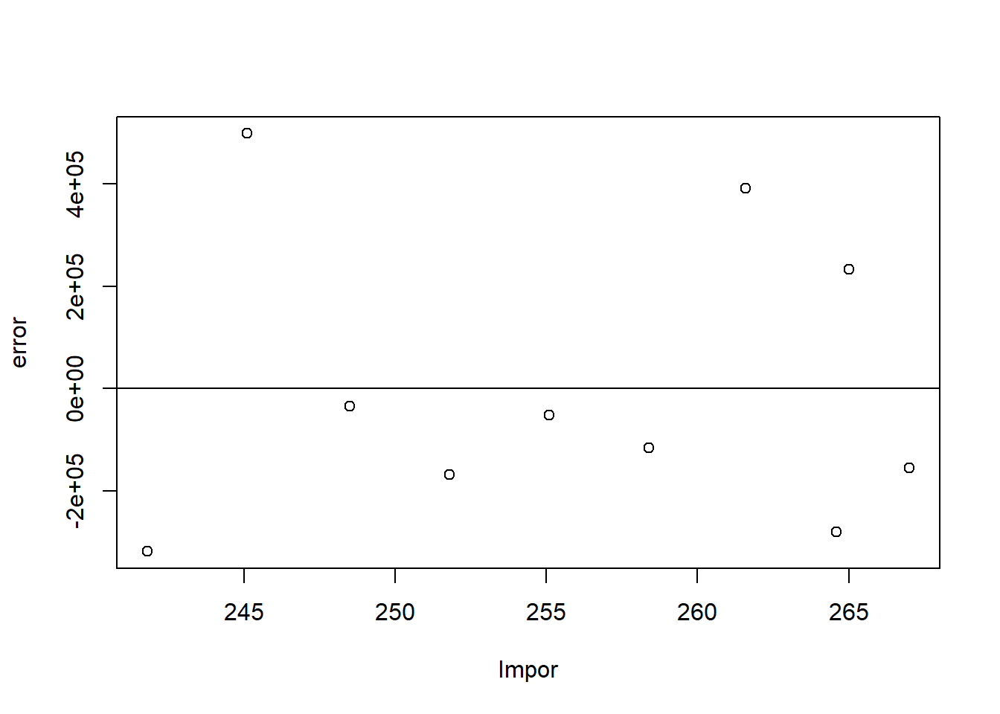

library(tidyverse)
library(readxl)Pengaruh Impor Beras Asal Thailand Terhadap Ketahanan Pangan Indonesia Periode 2010-2019
Metode Penelitian Politeknik APP Jakarta

1 Pendahuluan
1.1 Latar belakang
Selama dekade 2010-2019, impor beras dari Thailand telah menjadi faktor yang signifikan dalam memengaruhi ketahanan pangan Indonesia. Indonesia sebagai negara dengan populasi yang besar dan pertumbuhan ekonomi yang pesat menghadapi tantangan untuk memenuhi kebutuhan pangan domestik. Thailand sebagai salah satu produsen dan eksportir beras terbesar di dunia, menjadi pemasok utama bagi Indonesia.
Ketergantungan Indonesia pada impor beras dari Thailand sebagai solusi untuk mengatasi defisit produksi domestik. Meskipun impor dapat memberikan akses terhadap pasokan beras yang mencukupi, kebijakan ini juga meningkatkan risiko terhadap fluktuasi harga dan volatilitas pasar internasional. Selain itu, impor beras juga dapat mempengaruhi mata rantai pasok pangan nasional, menggerus keberlanjutan pertanian lokal dan kemandirian pangan. Oleh karena itu, penting untuk mengkaji pengaruh impor beras asal Thailand terhadap ketahanan pangan Indonesia selama periode tersebut.
1.2 Ruang lingkup
Penelitian ini akan fokus pada pengaruh impor beras asal Thailand terhadap ketahanan pangan Indonesia selama periode 2010-2019. Ruang lingkup penelitian mencakup pengaruh impor beras terhadap keseimbangan antara ketersediaan beras, jumlah penduduk, dan tingkat konsumsi dalam upaya mencapai ketahanan pangan di Indonesia.
1.3 Rumusan masalah
Berdasarkan uraian latar belakang diatas maka yang menjadi masalah pokok pada penelitian ini adalah:
Bagaimana hubungan antara variabel X, variabel Y, dan konsumsi beras dalam periode 2010-2019?
Bagaimana pengaruh impor beras terhadap keseimbangan antara ketersediaan beras, jumlah penduduk, dan tingkat konsumsi dalam upaya mencapai ketahanan pangan di Indonesia?
1.4 Tujuan dan manfaat penelitian
Tujuan dari penelitian ini adalah untuk menganalisis pengaruh impor beras asal Thailand terhadap ketahanan pangan Indonesia selama periode 2010-2019. Penelitian ini bertujuan untuk memahami hubungan antara variabel impor beras (X), jumlah penduduk (Y), dan konsumsi beras, dengan fokus pada pengaruhnya terhadap ketersediaan pangan domestik. Selain itu, penelitian ini bertujuan untuk mengevaluasi efektivitas kebijakan impor beras yang diterapkan oleh pemerintah Indonesia serta menjelajahi faktor demografis yang mungkin mempengaruhi dinamika ketahanan pangan. Hasil penelitian diharapkan dapat memberikan wawasan bagi pengambil kebijakan dalam meningkatkan ketahanan pangan Indonesia.
Adapun manfaat dari penelitian ini antara lain:
- Manfaat Teoritis
Manfaat teoritis dari penelitian ini mencakup pemahaman mendalam tentang keterkaitan antara impor beras dari Thailand dan ketahanan pangan Indonesia, membantu pembuat kebijakan, praktisi, dan peneliti untuk mengembangkan strategi yang lebih baik dalam mengelola ketahanan pangan nasional.
- Manfaat Praktis
- Bagi Penulis
Hasil penelitian ini memberikan manfaat praktis bagi penulis dengan meningkatkan keahlian analisis data menggunakan RStudio dan memperdalam pemahaman tentang impor beras asal Thailand dan ketahanan pangan di Indonesia. Penulis dapat mengaplikasikan keterampilan ini dalam penelitian selanjutanya.
- Bagi Instansi
Hasil Penelitian ini memberikan manfaat praktis bagi instansi terkait, seperti Kementerian Perdagangan atau Lembaga Statistik. Temuan ini dapat menjadi dasar untuk untuk meningkatkan ketahanan pangan Indonesia di tengah dinamika impor beras dari Thailand.
1.5 Package
Packages yang digunakan sebagai penunjang regresi multivariat dalam penelitian ini antara lain sebagai berikut:
2 Studi pustaka
- Ketahanan Pangan
Ketahanan Pangan mencerminkan kemampuan suatu entitas, baik itu negara, wilayah, atau individu, untuk menjamin ketersediaan pangan yang cukup, aman, bergizi, dan terjangkau bagi seluruh populasi sepanjang waktu. Aspek pertama dalam konsep ini adalah ketersediaan pangan, yang berkaitan erat dengan produktivitas sektor pertanian dan kemampuan memenuhi kebutuhan pangan melalui sumber daya alam. Selanjutnya, akses pangan menjadi aspek penting, melibatkan kemampuan individu atau kelompok untuk mendapatkan pangan secara fisik, ekonomis, dan sosial, termasuk distribusi dan stabilitas harga. Aspek lainnya adalah pemanfaatan pangan, yang menitikberatkan pada nutrisi dan kesehatan masyarakat. Ketahanan pangan juga mencakup stabilitas sistem pangan, di mana keberlanjutan dan kestabilan sistem tetap terjaga dalam menghadapi guncangan eksternal seperti perubahan iklim, bencana alam, atau krisis ekonomi. Kesadaran dan keterlibatan masyarakat menjadi dimensi penting, di mana pemahaman akan pentingnya pola makan sehat, pertanian berkelanjutan, dan kebijakan pangan yang baik dapat memperkuat ketahanan pangan secara menyeluruh. Ketahanan pangan yang baik memiliki dampak positif langsung terhadap kesejahteraan sosial, ekonomi, dan politik, menciptakan landasan yang kuat untuk stabilitas dan keberlanjutan pemenuhan kebutuhan pangan.
- Impor
Impor adalah kegiatan membeli barang atau jasa dari negara lain untuk digunakan di dalam negeri. Praktik impor merangkum sejumlah proses, termasuk pembelian, pengangkutan, dan pembayaran barang atau jasa dari pemasok asing. Negara-negara melakukan impor untuk mendapatkan barang atau jasa yang tidak dapat diproduksi atau tidak tersedia secara efisien di dalam negeri, atau untuk memenuhi permintaan yang melebihi kapasitas produksi domestik. Dalam era globalisasi, impor telah menjadi bagian integral dari perekonomian modern. Proses impor melibatkan negosiasi kontrak antara importir dan eksportir, termasuk penetapan harga, persyaratan kualitas, dan metode pembayaran. Setelah itu, barang atau jasa diangkut melalui jalur perdagangan internasional, seperti pelabuhan atau bandara, dan dikenakan bea cukai serta pajak impor.
Sitasinya, impor memainkan peran penting dalam memperluas akses pasar, meningkatkan keragaman produk, dan memfasilitasi pertukaran internasional. Namun, impor juga dapat menciptakan tantangan, seperti defisit perdagangan, ketergantungan eksternal, dan fluktuasi nilai tukar. Oleh karena itu, manajemen impor yang efektif dan kebijakan perdagangan yang bijaksana menjadi krusial untuk menjaga keseimbangan ekonomi suatu negara, mengoptimalkan keuntungan, dan menjaga ketahanan perekonomian nasional.
3 Metode penelitian
3.1 Data
| TAHUN | Impor (Y) | Jumlah Penduduk (X) | KONSUMSI BERAS (S) |
|---|---|---|---|
| 2010 | 209.127,8 | 241.8 | 33189891 |
| 2011 | 938.695,7 | 245.1 | 33673006 |
| 2012 | 315.352,7 | 248.5 | 34150917 |
| 2013 | 94.633,9 | 251.8 | 34623039 |
| 2014 | 366.203,5 | 255.1 | 31268435 |
| 2015 | 126.745,7 | 258.4 | 33144541 |
| 2016 | 557.890,0 | 261.6 | 33470000 |
| 2017 | 108.944,8 | 264.6 | 29130000 |
| 2018 | 795.600,1 | 265 | 26300000 |
| 2019 | 53.278,0 | 267 | 31310000 |
Penelitian ini menggunakan data sekunder dengan bentuk data time series 2010-2019, data yang dipakai ialah data yang telah diolah dengan sumber Badan Pusat Statistik.
library(readxl)
dat<-read_excel('BERAS.xlsx')
library(readxl)
reg1<-lm(y~x+s, data=dat)
dat$m<-resid(reg1)
plot(dat$x,dat$m,xlab="Impor",ylab="error")
abline(h=0) #membuat garis horizontal di y=0
3.2 Metode analisis
Teknik analisis yang digunakan dalam penelitian ini adalah teknik kuantitatif deskriptif. Metode yang dipilih adalah regresi multivariat dengan tujuan untuk mencari hubungan antara Impor Beras (Y) dengan Jumlah penduduk (X) dan Jumlah Konsumsi Beras (S). Spesifikasi yang dilakukan adalah:
\[ Y=\beta_0 +\beta_1 X+\beta_2 S+\mu \]
Di mana X adalah Impor Beras Thailand, S adalah Jumlah penduduk Indonesia, dan Y adalah Konsumsi Beras.
4 Pembahasan
4.1 Pembahasan masalah
| Variable | Coefficient | Std.Error | t-value | Pr(> |
|---|---|---|---|---|
| Intecerpt | 3.265e+07 | 1.338e+06 | 24.399 | 8.5e-09 |
| X | -1.762e+00 | 2.892e+00 | -0.609 | 0.559 |
| R squared | 0.04437 | |||
| Adjusted R-Squared | -0.07508 | |||
| F-Statistic | 0.3715 |
Analisis regresi linear menunjukkan hasil yang signifikan terkait pengaruh variabel impor beras (X) terhadap jumlah penduduk dan konsumsi beras. Dalam tabel estimasi regresi, terdapat dua baris yang mencakup intersep dan koefisien variabel X. Untuk nilai intersep (intercept), diperoleh perkiraan sebesar 3.265e+07, dengan kesalahan standar sebesar 1.338e+06. Meskipun nilai t-value sekitar 24.399, indikasi tidak signifikan secara statistik terhadap model ini didukung oleh nilai p-value yang tinggi, yaitu 8.5e-09. Ini menandakan bahwa variabel intersep memberikan kontribusi signifikan terhadap prediksi impor beras. Kemudian, pada variabel Y (impor), koefisien regresi diperkirakan sebesar -1.762e+00, dengan kesalahan standar 2.892e+00. Nilai t-value sekitar -0.609, dan p-value sebesar 0.559. Angka-angka ini mengindikasikan bahwa variabel impor memiliki pengaruh yang signifikan terhadap model regresi. Koefisien positif menunjukkan bahwa peningkatan jumlah penduduk dan konsumsi beras berkontribusi pada peningkatan impor beras.
4.2 Analisis masalah
Hasil regresinya adalah
library("readxl")
dat<-read_excel("BERAS.xlsx")
head(dat)# A tibble: 6 × 4
TAHUN x s y
<dbl> <dbl> <dbl> <dbl>
1 2010 242. 33189891 209128.
2 2011 245. 33673006 938696.
3 2012 248. 34150917 315353.
4 2013 252. 34623039 94634.
5 2014 255. 31268435 366204.
6 2015 258. 33144541 126746.library(readxl)
dat<-read_excel("BERAS.xlsx")
library(readxl)
reg1<-lm(x+s~y, data=dat)
summary(reg1)
Call:
lm(formula = x + s ~ y, data = dat)
Residuals:
Min 1Q Median 3Q Max
-4952394 -1123133 808657 1988784 2672774
Coefficients:
Estimate Std. Error t value Pr(>|t|)
(Intercept) 3.265e+07 1.338e+06 24.399 8.5e-09 ***
y -1.762e+00 2.892e+00 -0.609 0.559
---
Signif. codes: 0 '***' 0.001 '**' 0.01 '*' 0.05 '.' 0.1 ' ' 1
Residual standard error: 2698000 on 8 degrees of freedom
Multiple R-squared: 0.04437, Adjusted R-squared: -0.07508
F-statistic: 0.3715 on 1 and 8 DF, p-value: 0.5591Analisis regresi linear sederhana dilakukan untuk memahami hubungan antara variabel Impor Beras (Y) dengan variabel Jumlah penduduk (X) dan Jumlah Konsumsi Beras (S). Hasil regresi menunjukkan bahwa intercept (nilai saat Y=0) adalah 3.265e+07, yang mewakili perkiraan Jumlah penduduk dan Jumlah Konsumsi Beras ketika Impor Beras (Y) sama dengan nol. Koefisien untuk variabel Impor Beras (Y) adalah -1.762e+00, menunjukkan perubahan yang diharapkan dalam Jumlah penduduk dan Jumlah Konsumsi Beras untuk setiap unit perubahan dalam Impor Beras. Namun, koefisien ini tidak signifikan (p-value: 0.559), menunjukkan bahwa variabel Impor Beras mungkin tidak memberikan kontribusi signifikan terhadap variabilitas dalam Jumlah penduduk dan Jumlah Konsumsi Beras. Selain itu, nilai R-squared yang rendah (0.04437) dan p-value F-statistic yang tinggi (0.5591) menunjukkan bahwa model secara keseluruhan tidak signifikan.
5 Kesimpulan
Analisis regresi pada rentang waktu 2010-2019 menunjukkan bahwa tidak terdapat korelasi yang signifikan secara statistik antara impor beras ((X)) dan konsumsi beras ((Y)). Koefisien (X) tidak memiliki nilai yang signifikan (p-value = 0.559), menunjukkan bahwa dampak impor beras tidak konsisten terhadap tingkat konsumsi beras.
Pengaruh impor beras terhadap keseimbangan antara ketersediaan beras, jumlah penduduk, dan tingkat konsumsi tidak menunjukkan signifikansi statistik. Walaupun model regresi memberikan gambaran, koefisien (X) tidak memberikan pengaruh yang konsisten pada konsumsi beras. Oleh karena itu, dalam upaya mencapai ketahanan pangan di Indonesia, perlu dilakukan analisis mendalam terhadap kebijakan impor beras. Aspek-aspek seperti kebijakan pertanian, produksi beras lokal, dan faktor sosial-ekonomi masyarakat perlu menjadi fokus untuk merancang strategi yang lebih efektif dalam menghadapi tantangan ketahanan pangan. Pengkajian lebih lanjut terhadap faktor-faktor ini diharapkan dapat memberikan pemahaman yang komprehensif dan relevan terkait dinamika ketersediaan dan konsumsi beras di Indonesia.
6 Referensi
Azzahra, D. M., Amir, A., & Hodijah, S. (2021). Faktor-faktor yang mempengaruhi impor beras di Indonesia Tahun 2001-2019. E-Journal Perdagangan Industri Dan Moneter, 9(3), 181-192.
Hasanah, L. A. (2022). Analisis Faktor-Faktor Pengaruh Terjadinya Impor Beras di Indonesia Setelah Swasembada Pangan. GROWTH Jurnal Ilmiah Ekonomi Pembangunan, 1(2), 57-72.
Paipan, S., & Abrar, M. (2020). Determinan ketergantungan impor beras di Indonesia [determinants of rice import dependency in Indonesia]. Jurnal Ekonomi & Kebijakan Publik, 11(1), 53-64.
Prinadi, R., Yulianto, E., & Mawardi, M. K. (2016). Pengaruh Nilai Tukar Rupiah, Harga Beras Internasional dan Produksi Beras Dalam Negeri Terhadap Volume Impor Beras Indonesia (Studi Impor Beras Indonesia Tahun 2002-2013) (Doctoral dissertation, Brawijaya University).